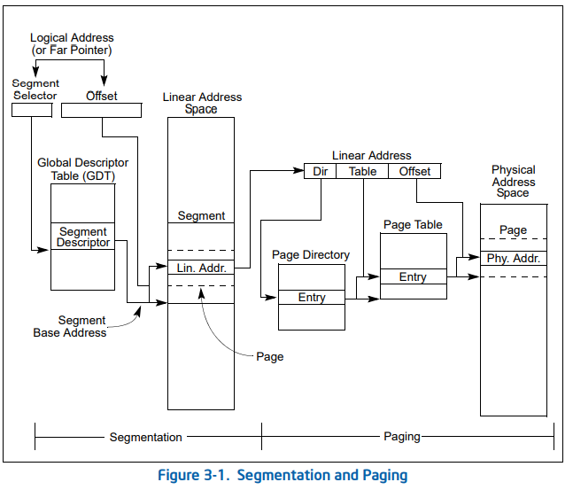
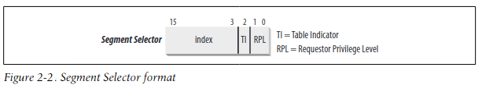
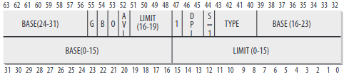
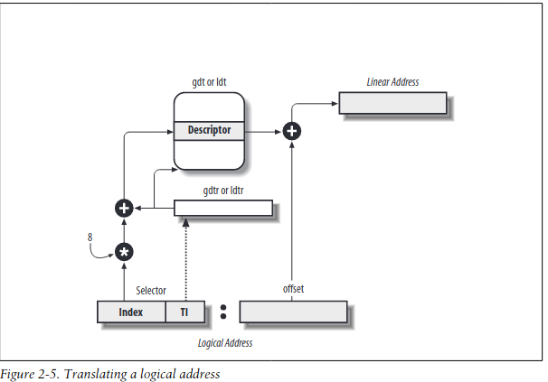
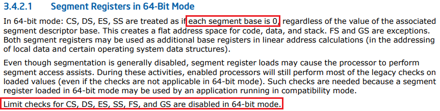
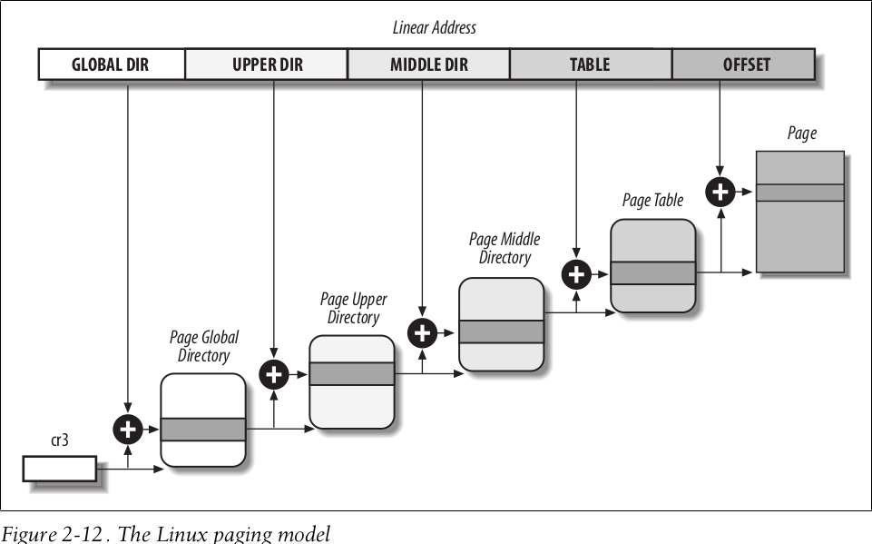
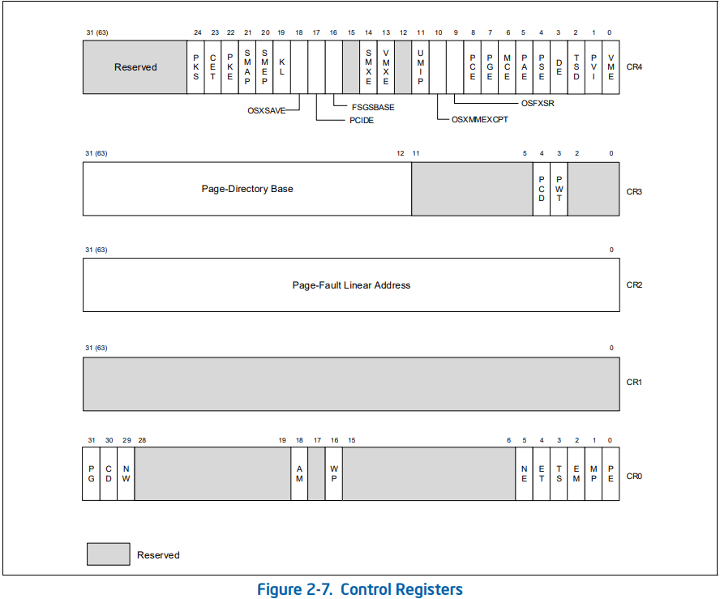

linux内核学习
前言
为了更好的了解Linux机制，为Kernel Pwn打下基础。则首先从正向分析分析Linux机制(调试源代码)，之后根据后续的需要再继续研究即可
环境搭建
编译内核
- 从镜像链接处下载相关版本的内核代码即可
这里选择linux-5.8版本进行研究 - 执行如下命令，安装相关依赖
1
2
3sudo apt-get update -y \
&& sudo apt-get install -y \
fakeroot build-essential ncurses-dev xz-utils libssl-dev bc libelf-dev flex bison dwarves - 执行如下命令解压内核源代码
1
tar -zxvf $(find . -maxdepth 1 -type f -name "linux*")
- 执行如下命令配置内核
1
(cd $(find . -maxdepth 1 -type d -name "linux*"); make menuconfig)
- 执行如下命令编译内核
1
(cd $(find . -maxdepth 1 -type d -name "linux*"); make -j4)
编译根文件系统
- 从官方链接获取busybox源码
- 执行如下命令解压busybox源代码
1
tar -jxvf $(find . -maxdepth 1 -type f -name "busybox*")
- 执行如下命令配置busybox，选中**Build static binary (no shared libs)
1
(cd $(find . -maxdepth 1 -type d -name "busybox*"); make menuconfig)
- 执行如下命令编译busybox
1
(cd $(find . -maxdepth 1 -type d -name "busybox*"); make -j4; make install)
- 执行如下命令创建根文件系统
1
2
3
4
5
6
7
8
9
10
11
12
13
14
15
16
17
18rm -rf fs && mkdir fs
cp -ar $(find . -maxdepth 1 -type d -name "busybox*")/_install/* fs
mkdir -p fs/{sys,proc,dev,etc/init.d}
touch fs/etc/inittab
echo -n '::sysinit:/etc/init.d/rcS
::respawn:-/bin/sh
::restart:/sbin/init' > fs/etc/inittab
echo -n '#!/bin/sh
mount -t proc none /proc
mount -t sysfs none /sys
echo /sbin/mdev > /proc/sys/kernel/hotplug
mdev -s' > fs/etc/init.d/rcS
chmod 777 fs/etc/init.d/rcS
(cd fs; find . | cpio -o --format=newc > ../rootfs.cpio)
编译qemu
- 从镜像链接处下载相关版本的qemu代码即可
这里选择最新的qemu-6.2.0版本 - 执行如下命令，安装相关依赖
1
2
3sudo apt-get update -y \
&& sudo apt-get install -y \
libglib2.0-dev libfdt-dev libpixman-1-dev zlib1g-dev libsdl1.2-dev ninja-build - 执行如下命令解压qemu源代码
1
tar -Jxvf $(find . -maxdepth 1 -type f -name "qemu*")
- 执行如下命令配置qemu
1
(cd $(find . -maxdepth 1 -type d -name "qemu*"); mkdir -p build; cd build; ../configure --target-list=x86_64-softmmu --enable-kvm --enable-sdl)
- 执行如下命令编译qemu
1
(cd $(find . -maxdepth 1 -type d -name "qemu*")/build; make -j4; sudo make install)
编译gdb
- 从镜像链接处下载相关版本的gdb代码即可
这里选择gdb-11.2版本 - 执行如下命令解压gdb源代码
1
tar -Jxvf $(find . -maxdepth 1 -type f -name "gdb*")
- 按照链接，修复gdb的问题
- 执行如下命令配置gdb
1
(cd $(find . -maxdepth 1 -type d -name "gdb*"); ./configure --prefix=/usr --with-python=/usr/bin/python3)
- 执行如下命令编译gdb
1
2
3export LDFLAGS=$(/usr/bin/python3-config --ldflags)
export LIBS=$(/usr/bin/python3-config --libs)
(cd $(find . -maxdepth 1 -type d -name "gdb*"); make -j4; sudo make install)
调试内核
执行如下命令，启动并调试内核
1
2
3
4
5
6
7
8
9
10
11
12
13
14
15
# 启动gdb
gnome-terminal --command "gdb -ex 'set architecture i386:x86-64' -ex 'add-auto-load-safe-path $(find . -maxdepth 1 -type d -name "linux*")/scripts/gdb/vmlinux-gdb.py' -ex 'add-symbol-file $(find . -maxdepth 1 -type d -name "linux*")/vmlinux' -ex 'target remote localhost:1234'"
# 启动qemu
qemu-system-x86_64 \
-initrd rootfs.cpio \
-kernel $(find . -maxdepth 1 -type d -name "linux*")/arch/x86_64/boot/bzImage \
-append 'rdinit=/linuxrc oops=panic panic=1 nokaslr' \
-enable-kvm \
-m 128M \
-smp cores=1,threads=1 \
-no-shutdown -no-reboot \
-s -S
内存寻址
这篇博客参考了非常多的资料，尤其是这篇资料
需要明确的是，目前Linux的内存管理机制仍然以分页机制为主，仅仅在特殊情况下(如需要32位环境)下，可能会采用分段机制
内存地址
下面主要以Intel的80x86CPU来介绍(因为其他的架构基本只支持分页机制)
其整体内存寻址的流程如下所示

80x86CPU从上电启动到完成Linux内核初始化，需要经历实模式(Real Mode) -> 保护模式(Protect Mode) -> 长模式(Long Mode)
实模式
实模式指的是16位的CPU可以访问1MB的内存
为了实现实模式，其每一个逻辑地址，都由一个16位的段(segment)和一个16位的偏移量(offset)构成。
而线性地址，则是逻辑地址的运算结果，即Linear Address = Segment * 16 + Offset
则这里，没有过多的保护机制，因此CPU的线性地址就是CPU的物理地址
保护模式
保护模式在实模式的基础上(即逻辑地址仍然由段和偏移组成)，添加了额外的机制(即分段机制)
段选择符(Segment Selector)
段选择符布局如下所示

段选择符的各个字段及其含义如下所示
| 字段名 | 描述 |
|---|---|
| index | 存放在GDT或LDT中的段描述符的下标 |
| TI | Table Indicator标志；指明段描述符是在GDT中(TI=0)，亦或是LDT中(TI=1) |
| RPL | 请求者特权级(Request Privilege Level)。当相应的段选择符装入到cs寄存器中时，指示CPU当前的特权级 |
段描述符(Segment Descriptor)
段选择符在相关段描述符表中，指定段描述符
段描述符布局如下所示

段描述符的各个字段及其含义如下所示
| 字段名 | 描述 |
|---|---|
| Base | 段首字节的线性地址 |
| G | 粒度标志；指明段大小是以字节为单位(G=0)，亦或是4096字节为单位(G=1) |
| Limit | 段最后一个字节的偏移量 |
| S | 系统标志；指明存储系统段(S=0)，亦或是普通代码段或数据段(S=1) |
| Type | 段的类型及其存储权限 |
| DPL | 描述符特权级(Descriptor Privilege Level)。表示访问这个段所要求的CPU最小的优先级 |
| P | Segment-Present标志。表示当前段在内存中(P=1)，亦或是不在内存中(P=0) |
| D/B | |
| AVL |
有了段选择符和段描述符的概念后，其获取线性地址的过程如下所示

而这里还没由开启分页机制，则其线性地址就是实际的物理地址
长模式
实际上，Linux通过一些小trick，从而让保护模式的段寄存器在Linux中的存在感不明显
- 对于32位模式来说
其将代码段和数据段的段描述符的Base字段设为0，将Limit字段设置为0xffffffff
从而将逻辑地址的偏移直接映射为线性地址 - 对于64位模式来说
由于Intel如下的硬件设置
因此也是将逻辑地址的偏移直接映射为线性地址
因此，在Linux内核中，其分段机制，总是将逻辑地址的偏移直接映射为线性地址。
而在长模式下，其开启了分页机制，则线性地址需要经过页表映射，才会转换为实际的物理地址
Linux内核支持多种分页模式(即使分页模式相同，在不同CPU架构下有不同参数)，下面简单分析Intel的80x86架构下主要的分页模式，如下所示

其中，Intel的80x86架构的CPU通过设置cr0、cr3，来控制分页机制的参数，具体如下所示

| 寄存器 | 标志位 | 描述 |
|---|---|---|
| cr0 | PG位(31bit) | 开启分页机制(PG=1)，亦或是关闭分页机制(PG=0) |
| cr0 | PE位(0bit) | 开启保护模式(PE=1)，亦或是关闭保护模式(PE=0)。要开启分页机制，必须开启该位 |
| cr3 | (51bit-12bit) | 存储页表最高层结构的物理地址 |
而关于Linux在80x86架构的具体页表实现细节，其是PAGE-mode depends，因此这里就不在研究了(没那个精力)，等到需要的时候在翻阅资料即可。